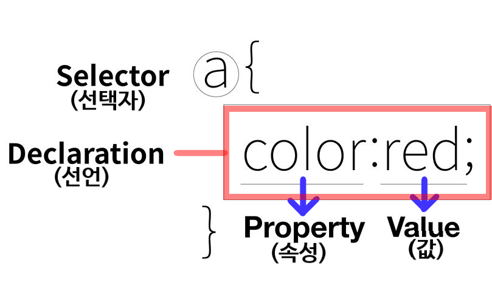

전체적인 텍스트의 색을 변경하려면 <body>태그에 color 속성을 넣고, 제목이면 <h1>~<h6>태그, 문단이면 <p>태그 등 자신이 원하는 선택자를 설정한 후 속성과 값을 적용해준다.
위의 a 선택자에 대한 css 문법은 아래처럼 서술할 수 있다.
a { : a 태그에
color:red; : 폰트 컬러 속성에 빨간색 값을 적용할 것이다.
}
전체 텍스트 색을 바꾸기 위해서는 body태그에 css의 color 속성을 이용하여 텍스트 색을 변경하면 된다. W3schools는 color 속성을 적용할 시, background-color 속성도 함께 적용해야 한다고 명시하고 있다.
만약 문단 텍스트의 색을 변경하고 싶다면, <p>태그에 CSS color 속성을 이용하여 텍스트 색을 변경하면 된다.